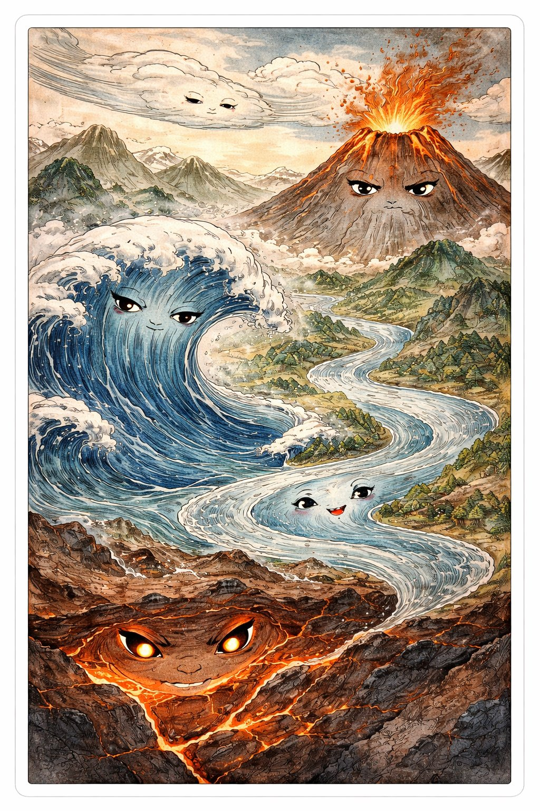
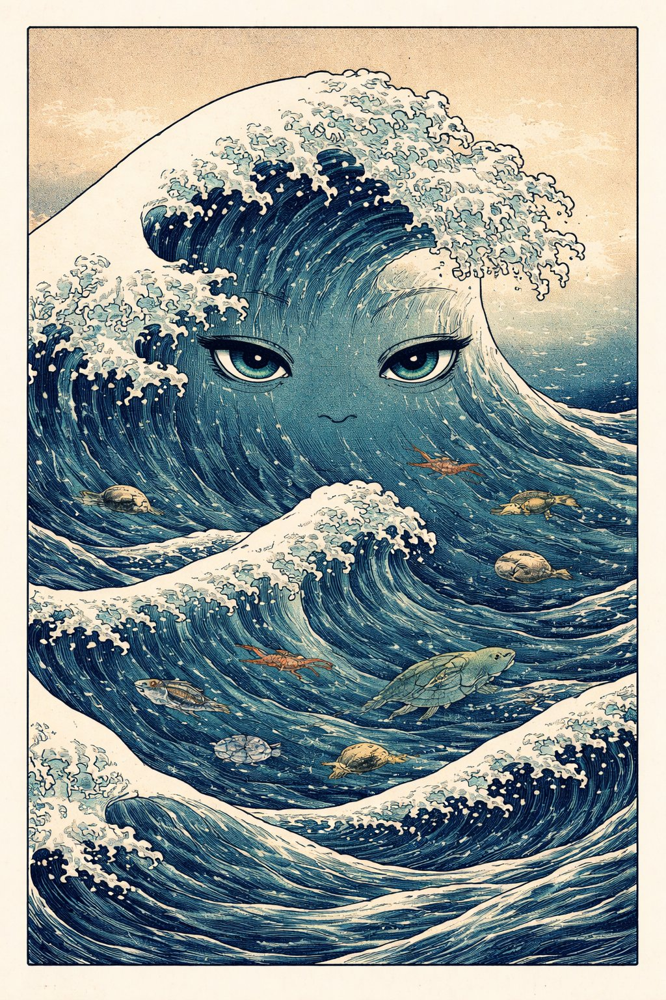
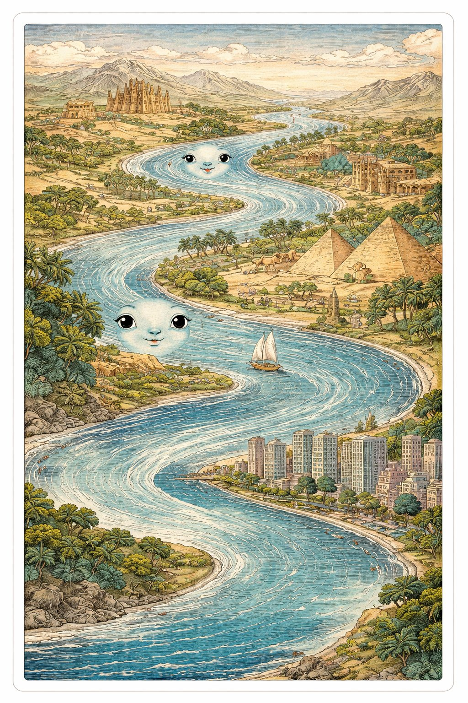
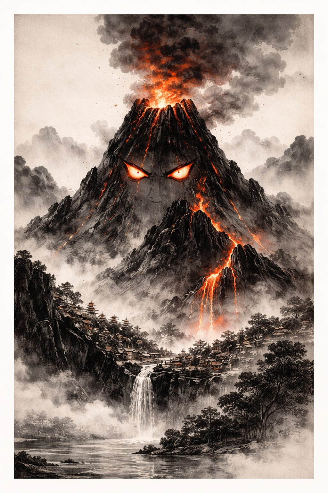
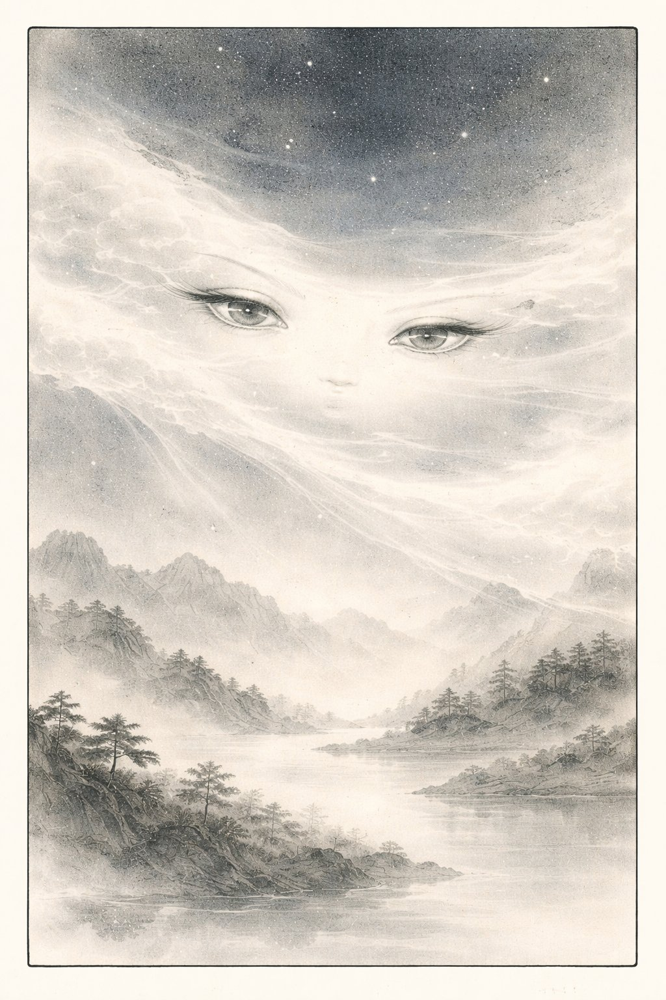
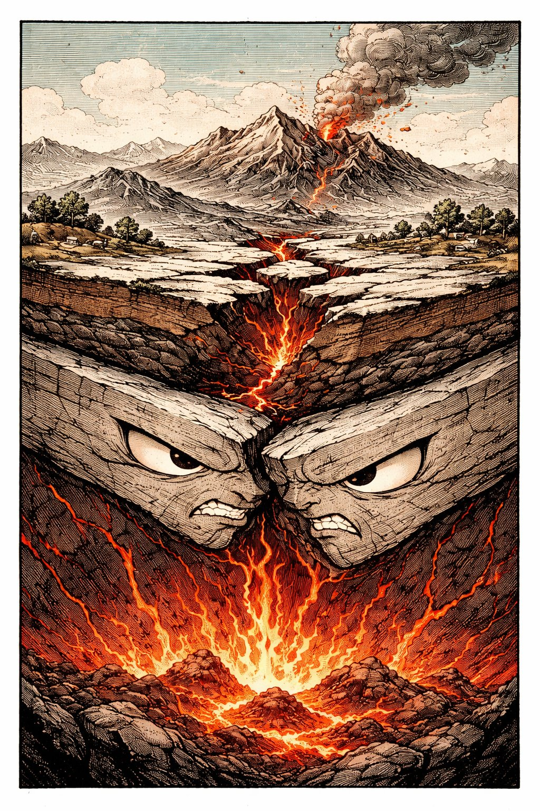

きみが たっている じめん。
それは かたくて うごかないように みえる。
でも じつは、きみの あしもとは いま この しゅんかんも うごいている。
1年に 数センチ。つめが のびるくらいの はやさで、大陸が うごいている。
地球は、いきている。
1
ウミさんは 海。地球の 表面の 71% を おおう。
生命は およそ 38億年前、海のなかで うまれた。
いまも 地球の 酸素の 約半分 は 海の 植物プランクトンが つくっている。
でも 深海の 95% は まだ 未踏。月の 表面より しらないことが おおい。

ヤマちゃんは 山（やま）と 火山。
プレートが ぶつかると 山が できる。ヒマラヤは いまも 年に5mm のびている。
火山は マグマを ふきだし、あたらしい 島を つくる（日本列島も 火山が つくった）。
でも 噴火は 文明を ほろぼしもする。79年の ヴェスヴィオ火山、ポンペイの 悲劇。

カワは 川。にんげんの すべての 古代文明は 川の そばで うまれた。
メソポタミア（チグリス・ユーフラテス）、エジプト（ナイル）、インダス、黄河。
川は 飲み水、農業用水、交通路、そして 境界線。

タイキは 大気。窒素78%、酸素21%、その他1%。
この うすい 層が、紫外線を カットし（オゾン層）、隕石を もやし（流れ星）、
気温を たもち（温室効果）、音を つたえ、空を 青く している。
いま、CO₂が ふえすぎて、温室効果が つよくなりすぎている。
大気は まもってくれている。でも 大気を まもるのは にんげんの しごと。

プレート先輩は プレートテクトニクス。
地球の 表面は 十数枚の 巨大な 岩盤（プレート）で できていて、
マントルの 対流に のって 年に 数センチ うごいている。
2億年前、大陸は ひとつだった（パンゲア）。それが わかれて いまの かたちになった。
日本は 4つの プレートが ぶつかる 場所。だから 地震が おおい。温泉も おおい。
ウミさんに おそわったこと — 「はじまりの ばしょは、まだ ほとんど しらない」。
ヤマちゃんに おそわったこと — 「つくることと こわすことは おなじ ちから」。
カワに おそわったこと — 「ぶんめいは、ながれの そばで うまれる」。
タイキに おそわったこと — 「まもられていることに、きづいていない」。
プレート先輩に おそわったこと — 「うごかないように みえるものも、うごいている」。
① 変動 — 地球は 止まっていない。山も海も大陸も、いまも うごいている。
② 薄さ — いのちを ささえる 大気も、海も、じつは ものすごく うすい。
③ 恩返し — 地球は まもってくれている。こんどは にんげんが まもる ばん。
きみの あしもとは、
いま この しゅんかんも、
うごいている。